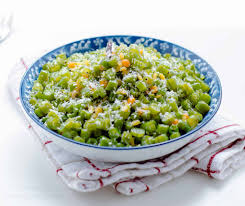

🥦 Poriyal Recipe

Ingredients
- 2 cups chopped vegetables (like cabbage, beans, or carrots)
- 1/2 cup grated coconut
- 1/2 tsp mustard seeds
- 1/2 tsp urad dal
- 2 dried red chilies
- 1 sprig curry leaves
- 1 green chili, chopped
- Salt to taste
- 1 tbsp oil
Instructions
- Heat oil in a pan, add mustard seeds and let them splutter.
- Add urad dal, red chilies, curry leaves, and green chili.
- Add chopped vegetables and salt. Sprinkle a little water.
- Cover and cook until vegetables are tender.
- Mix in the grated coconut and sauté for 2-3 minutes.
- Serve hot as a side dish.
Serve With
- Rice and Sambar
- Rasam
- South Indian Thali
🌿 Tip: You can mix different vegetables for a colorful and nutritious poriyal.